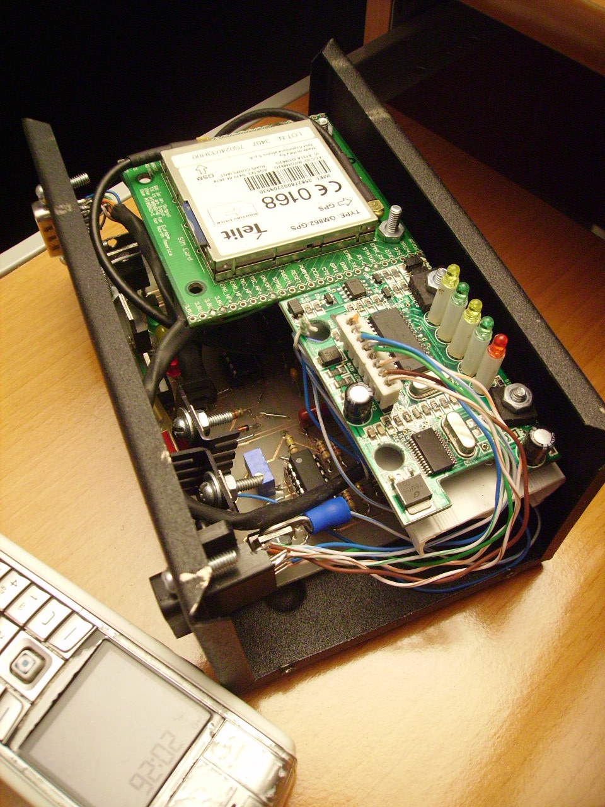
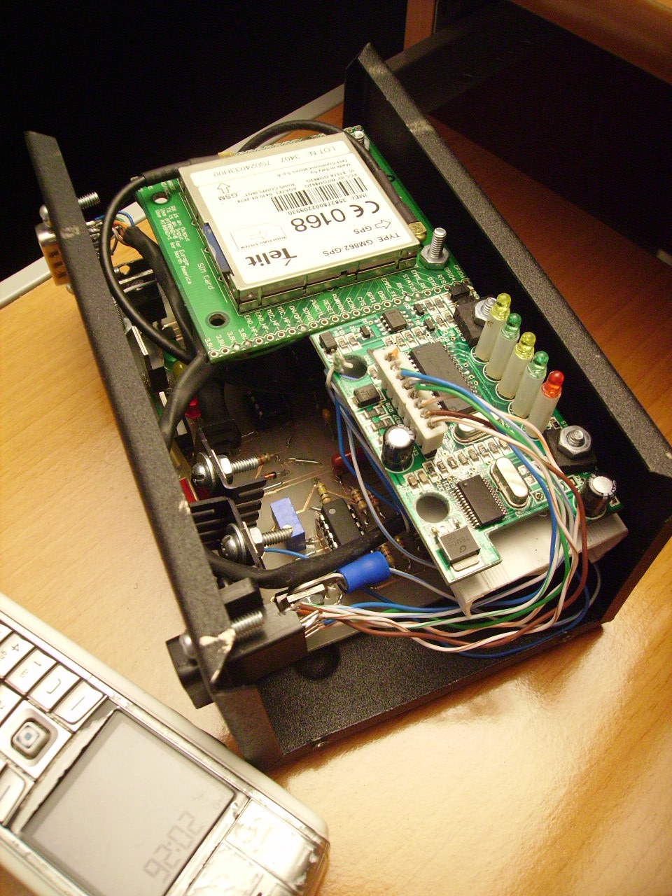

Nuestra Historia
Todo comenzó con un proyecto de título universitario. Por la pasión a la tecnología, se desarrolló un dispositivo electrónico capaz de comunicarse con el computador de motor de un vehículo. Este pequeño pero poderoso dispositivo leía parámetros clave como la temperatura del motor, el nivel de combustible y otros datos importantes, los combinaba con información de posicionamiento GPS y enviaba todo a un servidor para su visualización en tiempo real. Era el inicio de lo que hoy es DeEse.
 


Lo que empezó como un proyecto académico pronto se convirtió en algo más grande. Decidimos ponerlo a prueba en el mundo real, y así nació oficialmente DeEse. Desde nuestros primeros años, brindamos servicios de telemetría utilizando unidades de rastreo europeas, mientras continuábamos desarrollando y mejorando nuestras propias soluciones. Cada paso nos acercaba más a nuestro objetivo: ofrecer tecnología de punta para la gestión de flotas.
Nuestra dedicación y expertise no pasaron desapercibidos. Una empresa holandesa líder en desarrollo de telemetría nos contactó para ser su soporte técnico en Latinoamérica. Poco después, una reconocida empresa colombiana también confió en nosotros para lo mismo. Estas colaboraciones no solo nos permitieron crecer profesionalmente, sino que también nos brindaron experiencias enriquecedoras y amistades que perduran hasta el día de hoy.
https://lapuerta.com.co
Tras años de fructíferas alianzas y aprendizajes, decidimos centrarnos en DeEse, consolidando nuestra propia identidad y ofreciendo soluciones innovadoras y confiables para la gestión de flotas empresariales y el transporte escolar. Hoy, con más de 20 años de experiencia, seguimos comprometidos con nuestra misión: optimizar la gestión de flotas, brindar seguridad y tranquilidad a través de tecnología de primer nivel.
¿Por qué elegirnos?
- Innovación: Nacimos de un proyecto tecnológico y seguimos innovando cada día.
- Experiencia: Dos décadas de experiencia en el mercado nos respalda.
- Colaboraciones internacionales: Hemos trabajado con empresas líderes en Europa y Latinoamérica.
- Compromiso: Nos apasiona lo que hacemos y nos esforzamos por superar las expectativas de nuestros clientes.